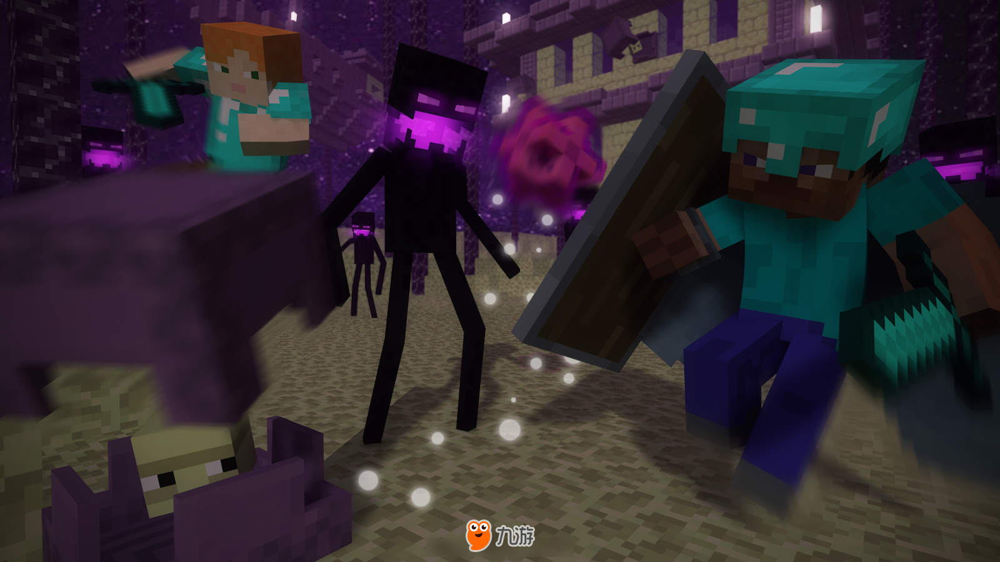
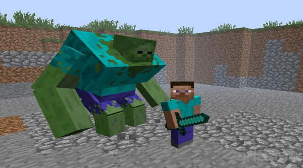
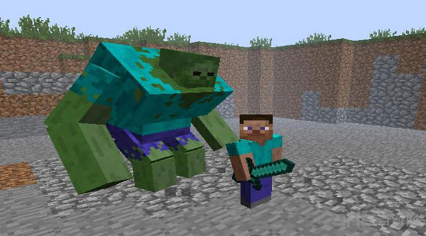

战斗
《我的世界》中充满无限可能，也有着许许多多的怪物。
 

mod示例
今天在这里为大家带来我的世界暮色森林MOD的图文攻略及介绍还有MOD用法
这张地图的整体难度偏难，怪物较多，铁甲可能是最低的标准
而且你需要一颗钻石和一个莹石粉（考虑到萤石在地狱生成）总的来说，本mod在你熟悉原版世界之后进行探索会比较好
首先依旧是进入暮色森林的方法，拿12朵花或蘑菇啥的摆出4x4，中间留空并倒上水，最后丢一颗钻石进去
砰！一道闪电从天而降，（站在附近是会受伤害的）并出现了传送门！
没关系，跳进去吧！
欢迎来到暮色森林！
如果你第一次来到暮色森林，最为紧迫的任务就是制作一张魔法地图，
这张地图将对你的探索起到极大的帮助，尽快做一张是十分必要的
为了制造这张地图你需要找到乌鸦和火炬浆果
乌鸦是一种比较稀有的生物，可能得花一番功夫找到它
火炬浆果是一种会发光的植物，生长在洞穴的顶部，一些小型的洞穴里也有可能发现它
打开之后的样子，唉？是不是多了很多东西？
地图上的各种标记都代表不同的建筑，在以后我会慢慢介绍
呼！地图终于做好了，终于有心情看一看周围的风景了！
暮色森林会生成不同于主世界的地形，以河流为界，在地图上显示为不同的板块
最常见的一种地形，黑色树木为苍穹树